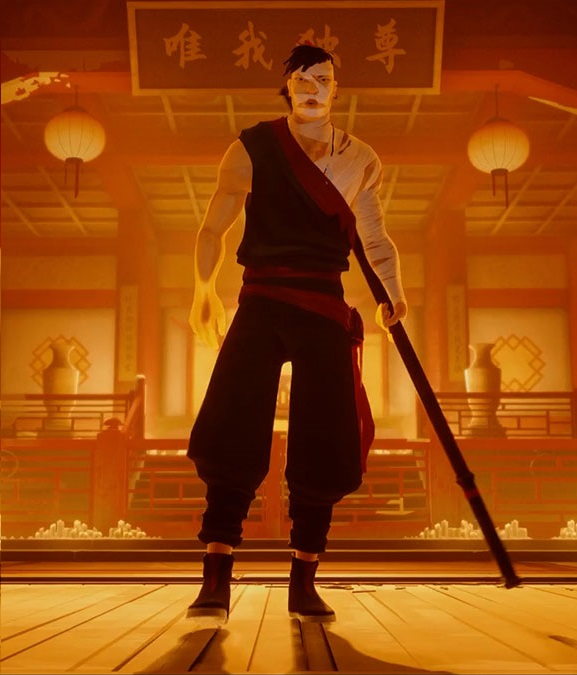
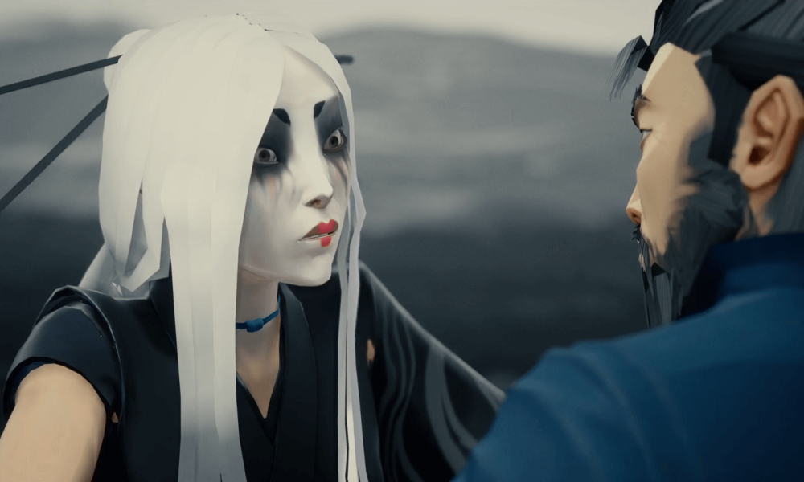
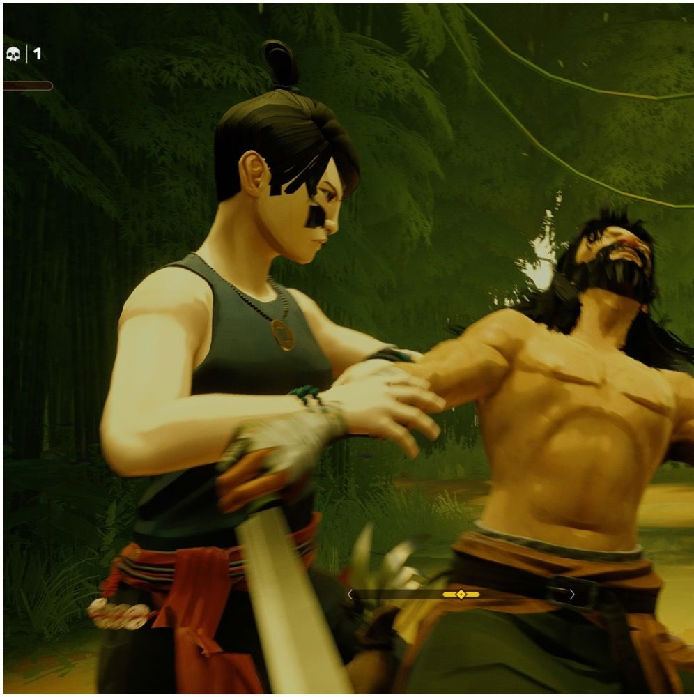

We expected Sifu to be challenging — but we didn't think it would be this unforgiving. It's a classic tale of martial arts revenge told across several urban stages, each one boasting unique combat encounters and brutal bosses. If you thought that Sifu was going to be a pure kung fu power fantasy, you're in for a world of hurt.
Sifu has a steep learning curve — the kind of learning curve that you typically find in fighting games, or more hardcore action titles like Devil May Cry. But there are no difficulty options in Sifu, and outside of a brief opening level that teaches you key moves, you're very much left to figure things out all by yourself.
There's a lot to wrap your head around right from the off — and this isn't the kind of action game where you can just dodge roll around your problems or parry your way to victory. Even when you're up against low-health lackeys, you need to consider spacing, combos, and environmental hazards. Incoming blows can be high or low; try to evade the wrong one and you'll get clipped. Simply put, Sifu doesn't pull any punches — if you'll pardon the pun.
We might only be three paragraphs into this review, but you'll probably already know whether Sifu is your kind of game. We have no doubts whatsoever that a lot of players will think about bouncing well before they've seen most of what Sifu has to offer — but if you can break through that initial barrier to entry and accept every defeat as an opportunity to learn, then there's nothing quite like SloClap's latest.
When you're in the zone, Sifu is ridiculously good. Immaculate animations combine with excellent sound design to create one of the most impressive tributes to martial arts that we've ever experienced in a video game. Overcoming what was once a seemingly insurmountable challenge is what Sifu is all about, and when you're eventually running through earlier levels without breaking a sweat, you realise just how rewarding this game is.
Sifu isn't without its frustrations, however. As alluded, your defensive techniques are all-important, and chief among them is your ability to avoid either high or low attacks. These cool-looking evasive manoeuvres need to be well timed, but actually reacting to your opponent's moves can be incredibly difficult — sometimes to the point where it feels cheap. The thing is, most attacks that you have to face are fast, and are rarely telegraphed in a way where you can avoid them through instinct alone.
Especially with stronger opponents, this often means that fights devolve into trial and error, and in worst-case scenarios, you end up 50 / 50 guessing whether a boss is going high or low. The combat system hinges so heavily on these high-low dodges that it almost feels like there should be a clearer tell — something like the red 'danger' kanji that appears over an enemy's head in Sekiro when they're about to unleash a perilous attack.
In fact, Sifu has more in common with Sekiro: Shadows Die Twice than you might think. Both you and your many opponents have two bars: a health bar and a stature bar. Your stature bar increases whenever you block or take a hit, and if it breaks, you're left defenceless for a few seconds — which is normally more than enough time for an enemy to finish the job. Meanwhile, if you smash a foe's fortitude, you get to use a supremely satisfying takedown attack to lay them out.
What's more, dying (often repeatedly) is a core part of the experience. Every time that you fall in battle, your death counter increases. And then, the number of deaths that you've accumulated are converted into years of your life. With every failure, your plucky protagonist grows older — and once you're in your 70s, your next death results in a blood red game over screen.
Explaining Sifu's roguelike elements is tricky, because there are a lot of permutations to how things work. When you get a game over, for example, you don't technically return to the beginning of the game. You can attempt that same stage again — but your age will be set to whatever your youngest record is. Basically, you're looking to complete each level at the youngest possible age. That way, you've essentially got more 'lives' for when you hit a particularly tough fight. If you're anything like us, perfecting a level quickly becomes an obsession.
You can also unlock a wide range of new abilities as you progress. Powerful moves are up for grabs if you've hoarded enough experience points, and every new technique adds yet more depth to combat. Thankfully, these skills can be unlocked permanently if you purchase them multiple times, but to be clear, there's no easy way to grind for experience points — you've just go to roll with what you have.
Gradually committing new moves to muscle memory while also trying to learn the ins-and-outs of fresh enemy types can be daunting — but again, the sense of achievement makes it all worthwhile. Besides, Sifu generally feels great to actually play at a super smooth 60 frame-per-second on PlayStation 5, alongside tight controls and some well implemented DualSense functionality. The haptics are used to pleasing effect here, with subtle vibrations adding weight to each strike, block, and parry.
But what really elevates Sifu is its often stunning art direction. It starts out quite drab as you rampage your way through gang-infested apartment blocks, but later stages incorporate shockingly abstract visuals and vibrant colours. It blossoms into a feast for the eyes — a game that's almost as gratifying to watch as it is to play. And it helps that the levels themselves are excellently designed; encouraging exploration at first, but allowing for quick access to key fights and even boss battles once you're familiar with the layout.
Sifu would only last a few hours if you could run through the entire game in one go — but the reality is that most players will spend considerably more time overcoming its many obstacles. Stages tend to last half an hour or so, but with enough practice, you can blitz them in ten minutes — and that's definitely part of the appeal.
Sifu doesn't pull any punches. It's a consistently challenging and demanding beat-'em-up, but persistence pays off. You'll be hard pressed to find a more rewarding game on PlayStation — especially one that's so visually striking and polished. Some quibbles with combat mechanics aside, Sifu is a knockout.